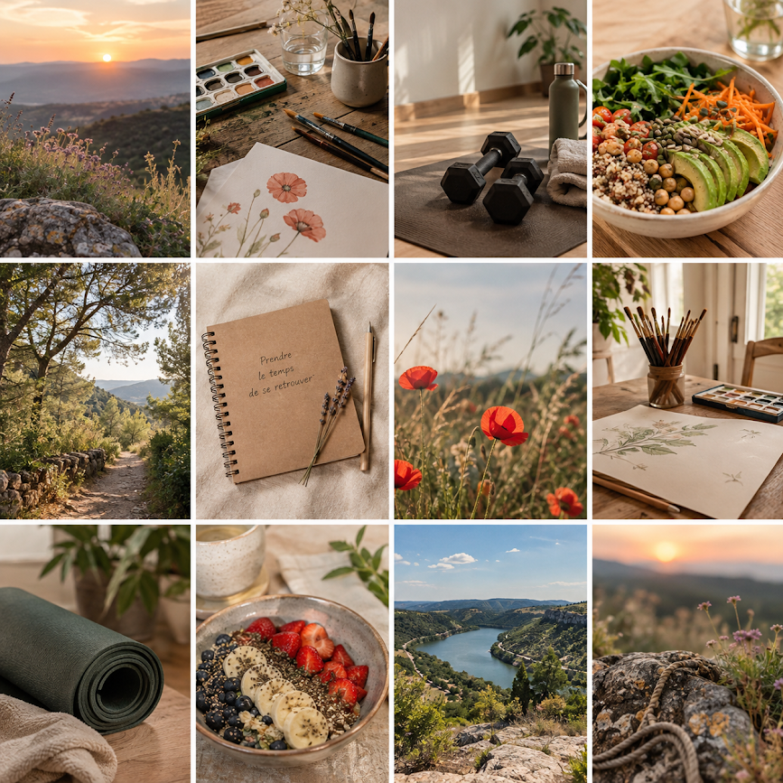

Parcours
Nouveau départ
Une étape de transition pour retrouver une direction, reprendre confiance et construire de nouvelles habitudes à son rythme.
Des parcours adaptés et personnalisés
Chaque accompagnement part de votre situation, de vos besoins et de votre rythme. Les parcours peuvent évoluer au fil du temps.
Sans formule obligatoire
Vous avez besoin de parler, de prendre du recul, de faire le point ou d’être accompagnée ponctuellement ? Ce rendez-vous est un espace d’échange personnalisé, sans obligation de faire du sport, de suivre un programme ou de participer à des ateliers.
Nous clarifions votre demande et explorons ensemble des pistes concrètes adaptées à votre situation.
Une étape de transition pour retrouver une direction, reprendre confiance et construire de nouvelles habitudes à son rythme.
Remettre l'activité physique au service du bien-être : renforcement, mobilité, mouvement, posture, énergie et sensations corporelles.
etrouver de l'assurance, oser davantage, prendre sa place et passer progressivement de l'attente de validation à l'action.
Un accompagnement global pour remettre du sens, du plaisir, du mouvement et de la créativité dans son quotidien.
Offrez-vous un espace de parole entièrement sécurisant, confidentiel et sans jugement. Cette séance individuelle est conçue comme une pause hors du temps pour déposer vos charges émotionnelles, clarifier vos pensées et être pleinement entendu(e).
Offrez-vous un tête-à-tête artistique avec vous-même. Pas à pas, vous explorerez la matière (fleurs, peintures, écritures) pour laisser parler votre intuition. Aucun prérequis technique requis, l'accent est mis sur le lâcher-prise et le plaisir des sens.

Votre rythme
Les parcours peuvent intégrer selon les besoins : séances individuelles, activité physique, mobilité, marche, danse, exercices de reconnexion corporelle, créativité et temps d'échange.
Le contenu précis se construit avec vous.
Premier pas
Pas besoin d'avoir toutes les réponses avant de prendre contact. Un premier échange permet de faire le point simplement.
Je prends contact